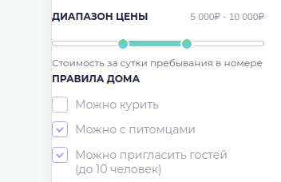

Наиболее распространенные ошибки на этапе код-ревью.
Общие моменты:
- В Readme проекта следует указывать версии плагинов, на которых его писали.
- Неверные пути к favicons.
- Наличие орфографических ошибок в именах переменных и т.д. Плагин SpellСhecker поможет с поиском ошибок.
- Библиотеки лежат обычными файлами, а должны быть установлены через npm или yarn.
- Не соблюдение нейминга файлов в стиле lowercase-hyphenated. Правило 3.1.
Также стоит учитывать исключения (Пример: файл экспортирующий класс, нейминг js файлов (правило 1.4).
- Отсутствуют дефолтные значения для аргументов функций, методов класса, pug миксинов.
- Прежде чем отключать правило линтера (// eslint-disable-next-line), разберитесь, зачем оно нужно. Не отключайте его без необходимости. И готовьтесь к тому, что вас могут попросить аргументированно обосновать своё решение; почему вы отключили данное правило.
- Структура БЭМ блока не соответствует правилу: 1 блок - 1 директория - 1 pug (1 миксин) - 1 css - 1 js.
- Использование элементов реализации блока из вне, и блока без pug миксина. Правило 4.4.
- Наличие BEM миксов. Правила 4.5 и 4.6.
- Файл экспортирующий класс должен называться так же, как и экспортируемый класс.
- Нельзя оставлять “закомменченный” код. Правило 1.23.
- Неверная сортировка импортов. Правило 1.17.
- Неверная сортировка методов класса. Правило 8.5.
- Отсутствие префиксов js-. Правило 5.1.
- Не модульный JS. Правило 5.5.
- Неверный выбор типа BEM модификатора (булевый, ключ-значение).
Пример: button_type_hidden.
Hidden - это булевый модификатор, свойство либо есть, либо нет. Ключ для него не нужен. Правильно - button_hidden
Ключ требуется когда есть вариативность: button_size_big, button_size_middle - Одному DOM элементу должен соответствовать один БЭМ-блок или элемент.
Неправильно:
.calculator__button.calculator__plus
Правильно:
.calculator__button.calculator__button_action_plus.calculator__button_disabled
Toxin:
- Все страницы, кроме UI kit, должны быть адаптированы под ширину от 320 до 1920 пикселей. При большой ширине (1200+) контейнер с контентом растягивать не нужно, страницы должны соответствовать макетам. При маленькой ширине (как на мобильных устройствах), для меню использовать “гамбургер”.
- Часто встречаются ошибки в pixel perfect.
- Частое несоблюдение стилей макета, т.е. граница у кнопки не градиентная, а сплошная; текст не полупрозрачный, а непрозрачный и т.п.
- Отсутствует маска в masked-textfield.
- Диаграмма на странице room-details не должна быть просто картинкой. В параметрах нужно передать список значении и построить круговую диаграмму на их основе.
- В date-dropdown должен быть один календарь на два инпута.
Не забывайте проверять как выглядит календарь на мобильных. Если ввод дат вручную в инпуты работает некорректно, то необходимо запретить его. То же самое и для dropdown.
- Устанавливать адекватные отступы от края экрана и между смысловыми блоками на странице. Правило 1.13.
Пример плохих отступов:

Slider:
- Readme описан недостаточно полно. Отсутствует информация о том как подписаться на события слайдера и отписаться от них, с какой версией node и jQuery проект совместим.
- Код для клиента и код для демонстрации слайдера находятся в одном продакшн бандле. На выходе код клиента и демонстрационный код должны лежать в разных файлах, чтобы клиент не грузил абсолютно ненужный ему код. Реализовать это можно созданием по одной точке для каждого типа кода.
- jQuery находится в продакшн бандле, предпочтительнее, чтобы клиент устанавливал jQuery самостоятельно, подобрав версию, совместимую для нескольких плагинов. Можно подключить jQuery в слайдер через CDN.
- На демо-странице для слайдера не соблюдаются стандарты (в первую очередь касается БЭМ, ооп для ts, весь код страницы не должен находиться в одном/двух файлах).
- Слайдер ломается при передаче нестандартных значений. Также в слайдере не должны лежать невалидные значения.
Пример невалидных значений: При min 0, а max 10, шаг не может быть 11.
- Необходимо проверять демо на ошибки. Тестировать разного рода значения: большие, маленькие, отрицательные, дробные, невалидные.
Typescript:
- В tsconfig должен быть установлен флаг strict: true.
- Запрещается добавлять в tsconfig флаги, ослабляющие проверки типов, такие как, например, suppressImplicitAnyIndexErrors, suppressExcessPropertyErrors и подобные.
- Запрещается использовать правило @ts-ignore.
- Использовать ‘any’ разрешается только в одном случае. Когда у вас совершенно никак не получается затипизировать без использования ‘any’ и вы испробовали все возможные варианты. Также вам ОБЯЗАТЕЛЬНО нужно будет написать подробный комментарий, почему вы не смогли обойтись без использования ‘any’.
- Запрещается использовать type assertions, в частности с помощью “as” и non-null assertion operator (оператор “восклицательный знак”).